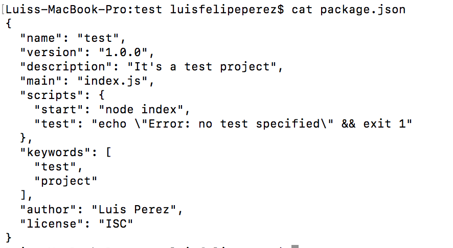

NodeJS
Exploring Node.JS modules
Node.JS
What?
An asynchronous event driven JavaScript runtime built on Chrome's V8 JavaScript engine.
Why?
Non-blocking. Scalable. Javascript front and backend.
Non-blocking: Blocking methods execute synchronously and non-blocking methods execute asynchronously. It means there are no worries of dead-locking the process, since there are no locks. The code execution does not have to stop for I/O operation, it simply asks for I/O and gets the answer once it is finished and then deals with the results - the commonly known callbacks.
Scalabe: Since it is non-blocking, multiple connections can be handle concurrently. Upon each connection the callback is fired, but if there is no work to be done, Node will sleep. Because nothing blocks, scalable systems are very reasonable to develop in Node.
Javascript: The same programming language you use to create your frontend you will use to build the backend. It means you can use all features and functionalities of Javascript wherever you want - without mentioning the community!
How?
Despite the fact that JavaScript is single-threaded, the event loop is what allows Node.js to perform non-blocking I/O operations by offloading operations to the system kernel whenever possible. The event loop is a Javascript structure responsible for taking tasks on the task queue and pushing then to Javascript stack to be executed. So, in a few words, Node.js sends the tasks as soon as they enter the stack to the system's APIs to be executed, after the system execute it pushes the task to task queue and the the event loop, as soon as possible, send the callback to the stack. That's how a single-threaded runtime can execute multiple tasks at a time - at least is the idea we have.
Some basics
Modules
In Node's module system, each file is treated as a separate module. That way, you can easily
divide your code into modules using a project pattern or a convenient way you find most useful. When writing a module,
it must exposed so it can be used - or even reused - in other places inside the application. This is done by
the objectmodule.exports, which is created by Node's module system. Consider the following example, the math.js file:
const square = (n) => {
return n * n;
}
module.exports = square;
const sqr = require('./math');
console.log(sqr(3)); // it prints 9
node_modules
folder of our application structure. To import these modules and any built-in module that comes shipped with Node, you don't need
the relative path. Example:
const path = require('path'); // built-in
const express = require('express'); // 3rd party
For more information, check the modules API
Process
The process object is a global that provides information about, and control over, the current Node.js process. As a global,
it is always available to Node.js applications without using require().
Things we can do with Node
Before we start lets understand the power of Node!
Few things you can do using NODE:
- HTTP/HTTPS server
- Async and routine tasks
- Open, read, write and remove files
- Send emails
- Work with Arduino
- Connect to Database
NVM
Node Version Manager
Easiest way to have more than one node version installed.
Follow the instructions to install at https://github.com/creationix/nvm
Important commands
nvm install 8nvm install nodenvm use 8nvm alias default 8NPM
Let's start!
From now on, we will start using Node everytime and the most important thing is how to start it. Create and go to a folder where you will add the node files.
By using your Terminal, go to this folder and let's run our first node command:
npm initYou will be asked few questions about this new project you are creating. if you only press Enter (Return) it will use the default value inside parenthesis.

In case all the answers are correct, press Enter again.
This process was only to generate a package.json file.
Package.json
What's it?
Basically, this file has a lot of informations about your project:
- Project name
- Project version
- Dependencies
- Author
- Scripts which can be ran by `npm run start` or `npm run any-script-name`
- Read more at https://docs.npmjs.com/files/package.json
Package.json example
Web server with Node
Creating a web server with Node
From now on, we will see more commands and the course will be more practical.
Let's start!
Make sure you have you terminal open on wanted folder where you will work on.
echo "" > index.jsconsole.log("test");node index$ node index
testNow we will create our first HTTP server. Node already have a module for it. Let's request it and use! Clear index.js file and add this:
var http = require('http');
http.createServer(function(request, response){
response.writeHead(200, {'Content-type': 'text/html'});
response.end('Welcome to NODE HTTP SERVER');
}).listen(8088);Are you seeing this message: "Welcome to NODE HTTP SERVER"?
Returning 404 status
Let's change few things on it.
Now, instead of returning status 200, let's say this page is not found and return 404. Your code should looks like this now:
var http = require('http');
http.createServer(function(request, response){
response.writeHead(404, {'Content-type': 'text/html'});
response.end('404 Not found page');
}).listen(8088);More ways to write something on HTML
HTTP module also has more ways to write the response for the client, but you need to remember to end the response by using
response.end()response.write
var http = require('http');
http.createServer(function(request, response){
response.writeHead(404, {'Content-type': 'text/html'});
response.write('');
response.write('');
response.write('<h1>Hello, World!</h1>');
response.write('');
response.write('');
response.end();
}).listen(8088);File System (FS)
https://nodejs.org/api/fs.htmlThe fs module provides an API for interacting with the file system in a manner closely modeled around standard POSIX (Portable Operating System Interface) functions.
All file system operations have synchronous and asynchronous forms.
Some things you can do with FS:
- Read files
- Create files
- Update files
- Delete files
- Rename files
Going back to our example, we will read template.html and add it to the response.
Create a file template.html and add some html tags on it
<html>
<head></head>
<body>
<h1>Welcome back again</h1>
</body>
</html>index.js
var http = require('http');
var fs = require('fs');
http.createServer(function(request, response){
fs.readFile('template.html', function(err, data) {
response.writeHead(200, {'Content-Type': 'text/html'});
response.write(data);
response.end();
});
}).listen(8088);It's much better now, but there is something weird on it. All requests will take the client to the same resource. Try it localhost:8088/your-name. We must create a Router Module
Creating Router Module
All requests received by the server has 2 importants properties:
- Method
- URL
Method has the method name used by the client to access the resource. It could be GET, POST, PUT, DELETE, OPTIONS etc.
URL is the path used by the client which we will use to route to the correct resource
var http = require('http');
var fs = require('fs');
http.createServer(function(request, response){
console.log(request.method, request.url);
response.end();
}).listen(8088);Paste this code if you want to see the values for .method and .url. Go to your browser, refresh the page and check the log on terminal.
Now, let's change it to show different contents for distinct urls.
Let's first create another template file, named as template2.html. Then we will create an IF statement and the condition will be if METHOD is GET and URL is '/' or '/test
var http = require('http');
var fs = require('fs');
http.createServer(function(request, response){
console.log(request.method, request.url);
if (request.method === 'GET' && request.url === '/') {
fs.readFile('template.html', function(err, data) {
response.writeHead(200, {'Content-Type': 'text/html'});
response.write(data);
response.end();
});
}
else if (request.method === 'GET' && request.url === '/test') {
fs.readFile('template2.html', function(err, data) {
response.writeHead(200, {'Content-Type': 'text/html'});
response.write(data);
response.end();
});
}
}).listen(8088);Again, go to your browser and access localhost:8088 and localhost:8088/test. It should work!
It works, but we still don't have a module. Keep your code like this will work but it would be hard to do any maintenance when it gets bigger.
The module we will create will handle GET and POST requests only for now, and will expect as parameter only the path and the callback. The main idea is to have it like:
ourModule.get('/', function(request, response){});ourModule.post('/', function(request, response){});The first thing we need to do is create a modules folder within our module. Let's call it as RouterModule.
modules/router.js
var routes = {
get: {},
post: {}
};
var router = function () {
this.get = function (path, callback) {
routes.get[path] = callback;
};
this.post = function (path, callback) {
routes.post[path] = callback;
};
this.handler = function(request, response){
var callback = routes[request.method.toLowerCase()][request.url];
if (callback){
callback(request, response);
}
else{
response.writeHead(404);
response.write("404 NOT FOUND");
response.end();
}
};
return this;
};
module.exports = router;index.js
var http = require('http');
var fs = require('fs');
var router = require('./modules/router');
var Router = new router();
Router.get('/', function(request, response){
fs.readFile('template.html', function(err, data) {
response.writeHead(200, {'Content-Type': 'text/html'});
response.write(data);
response.end();
});
});
Router.get('/test', function(request, response){
fs.readFile('template2.html', function(err, data) {
response.writeHead(200, {'Content-Type': 'text/html'});
response.write(data);
response.end();
});
});
http.createServer(function(request, response){
Router.handler(request, response);
}).listen(8088, function () {
console.log("Server listening to port 8088");
});Using this module, our routes are now out of createServer method and was replaced by router.handler from our module.
Taking a look on the module code, there are:
- Routes object
- Router module
At the end, we can see `module.exports = router`. That means we are exposing (or returning) to require caller only Router Module and the rest are to be used only inside our module.
Now we know how to create our own module, let's remove all the routes from index.js. Any idea?
./routes.js
var fs = require('fs');
var RouterModule = require('./modules/router');
var Router = new RouterModule();
Router.get('/', function(request, response){
fs.readFile('template.html', function(err, data) {
response.writeHead(200, {'Content-Type': 'text/html'});
response.write(data);
response.end();
});
});
Router.get('/test', function(request, response){
fs.readFile('template2.html', function(err, data) {
response.writeHead(200, {'Content-Type': 'text/html'});
response.write(data);
response.end();
});
});
module.exports = Router;index.js
var http = require('http');
var routesSite = require('./routes');
http.createServer(function(request, response){
routesSite.handler(request, response);
}).listen(8088, function () {
console.log("Server listening to port 8088");
});`
Now, lets send each request to a specific controller:
routes.js
`var RouterModule = require('./modules/router');
var BaseController = require('./controllers/BaseController');
var Router = new RouterModule();
Router.get('/', function(request, response){
BaseController.home(request, response);
});
Router.get('/test', function(request, response){
BaseController.test(request, response);
});
module.exports = Router;controllers/BaseController.js
var fs = require('fs');
var BaseController = {
home: function (request, response) {
fs.readFile('template.html', function (err, data) {
response.writeHead(200, {
'Content-Type': 'text/html'
});
response.write(data);
response.end();
});
},
test: function(request, response){
fs.readFile('template2.html', function(err, data) {
response.writeHead(200, {'Content-Type': 'text/html'});
response.write(data);
response.end();
});
}
};
module.exports = BaseController;